מכפלת פולינומים ו-FFT
⏱ זמן משוער: 75 דק'
0. הבעיה: לכפול שני פולינומים מהר
אתה כבר יודע לתכנת, ואתה יודע שלכפול שני מספרים גדולים או שני פולינומים נראה פשוט — אבל התמימות עולה ביוקר. נתונים שני פולינומים a, b מדרגה n המיוצגים ע"י וקטור מקדמים, והמטרה היא "לכפול את הפולינומים בדרך המהירה ביותר". אם נכפול ישירות בייצוג המקדמים — כל מקדם בתוצאה הוא סכום של מכפלות, ובסך הכל נשלם Θ(n2). הפרק הזה בונה, צעד־צעד, מסלול חלופי מבריק שמצליח לרדת ל-Θ(n log n) — אלגוריתם ה-FFT (Fast Fourier Transform).
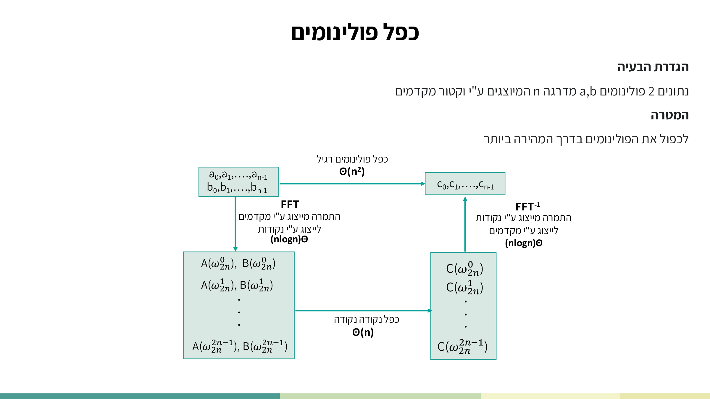
מקור: lec-polynomial-mult-fft.pdf (עמ' 2–3), fft.pdf (עמ' 1–3)
1. שני ייצוגים לפולינום: מקדמים מול נקודות
פולינום P נכתב ב-ייצוג מקדמים:
P(X) = p₀ + p₁·X¹ + p₂·X² + p₃·X³ + ⋯ + pₙ₋₁·Xⁿ⁻¹
חיבור שני פולינומים בייצוג זה הוא זול — מחברים מקדם-מקדם בזמן לינארי ("Easy to compute in linear time!"):
(P+Q)(X) = (p₀+q₀) + (p₁+q₁)·X¹ + (p₂+q₂)·X² + ⋯ + (pₙ₋₁+qₙ₋₁)·Xⁿ⁻¹
אבל כפל בייצוג מקדמים יקר: כל מקדם בתוצאה הוא קונבולוציה של המקדמים, ולכן המחיר הוא Θ(n2) ("Takes Θ(n²) time to compute!"):
(P×Q)(X) = (p₀·q₀) + (p₀·q₁+p₁·q₀)·X¹ + (p₀·q₂+p₁·q₁+p₂·q₀)·X² + ⋯ + (pₙ₋₁·qₙ₋₁)·X²ⁿ⁻²
1.1 המשפט שמצדיק את ייצוג הנקודות
זו ההצדקה ל-ייצוג נקודות: אפשר לתאר פולינום לא ע"י מקדמיו אלא ע"י ערכיו ב-n נקודות. האינטואיציה: דרך שתי נקודות עובר בדיוק ישר יחיד (פולינום ממעלה 1); דרך שלוש נקודות עוברת בדיוק פרבולה יחידה, וכן הלאה. היתרון הגדול: בייצוג נקודות הכפל לוקח רק Θ(n) — פשוט כופלים את ערכי־ה-y נקודה-נקודה.
1.2 דוגמת המרצה — כפל בייצוג נקודות
נתונים P(x) = 2x + 1 ו-Q(x) = x − 1, והמכפלה P·Q(x) = 2x² − x − 1. המכפלה ממעלה 2, ולכן דרושות 4 נקודות (לא 2!) כדי לייצג אותה חד-ערכית. מעריכים את P, Q ו-P·Q ב-x = 0,1,2,3:
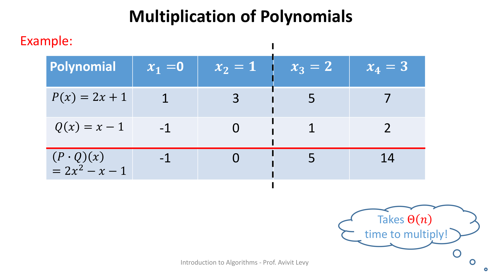
| פולינום | x=0 | x=1 | x=2 | x=3 |
|---|---|---|---|---|
| P(x)=2x+1 | 1 | 3 | 5 | 7 |
| Q(x)=x−1 | −1 | 0 | 1 | 2 |
| P·Q(x)=2x²−x−1 | −1 | 0 | 5 | 14 |
מקור: fft.pdf (עמ' 1–9)
2. שורשי היחידה ותכונותיהם
ממשפט האלגברה: לכל פולינום ממעלה n יש בדיוק n שורשים מרוכבים. הפולינום שמעניין אותנו הוא P(x) = Xⁿ − 1. שורשיו — פתרונות המשוואה Xⁿ = 1 — נקראים שורשי יחידה (unit roots). כדי להבין אותם נעבור לרגע לשני ייצוגים של מספר מרוכב.
2.1 ייצוג אלגברי ופולרי של מספר מרוכב
- ייצוג אלגברי: נקודה (x,y) במישור המרוכב היא המספר x + i·y, כאשר i² = −1.
- ייצוג פולרי: אותה נקודה כזוג (r, θ) עם r = √(x²+y²), θ = tan⁻¹(y/x), x = r·cos θ, y = r·sin θ.
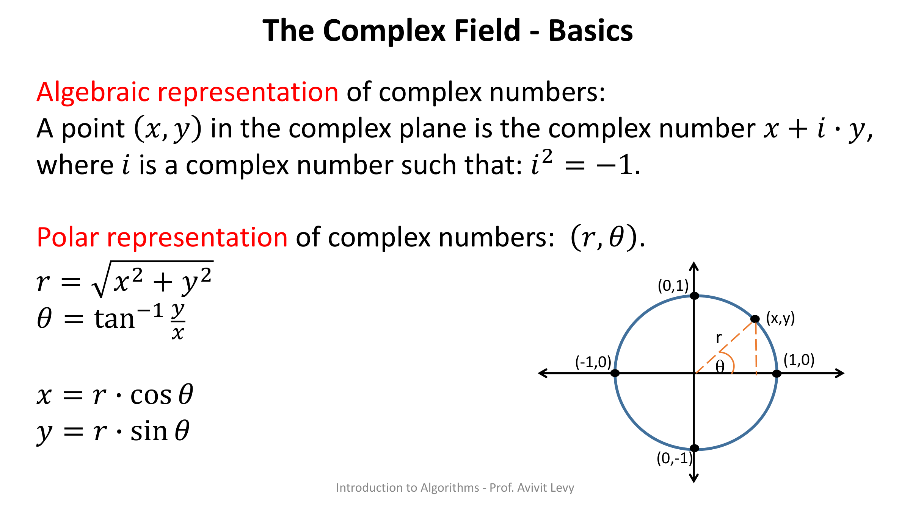
הכפל בייצוג פולרי פשוט להפליא — מכפילים רדיוסים ומחברים זוויות: (r₁,θ₁)·(r₂,θ₂) = (r₁·r₂, θ₁+θ₂). מכאן פותרים בקלות Xⁿ=1: אם (r,θ)ⁿ = (rⁿ, n·θ) = (1,0) אז rⁿ=1 ⟹ r=1 (על מעגל היחידה) ו-n·θ = 2πk ⟹ θ = 2πk/n עבור k = 0,…,n−1. n שורשי היחידה מסודרים אפוא במרווחים שווים על מעגל היחידה.
דוגמאות מפורשות:
- n=2: 1, −1
- n=4: 1, i, −1, −i
- n=8: 1, √2/2 + i·√2/2, i, −√2/2 + i·√2/2, −1, −√2/2 − i·√2/2, −i, √2/2 − i·√2/2
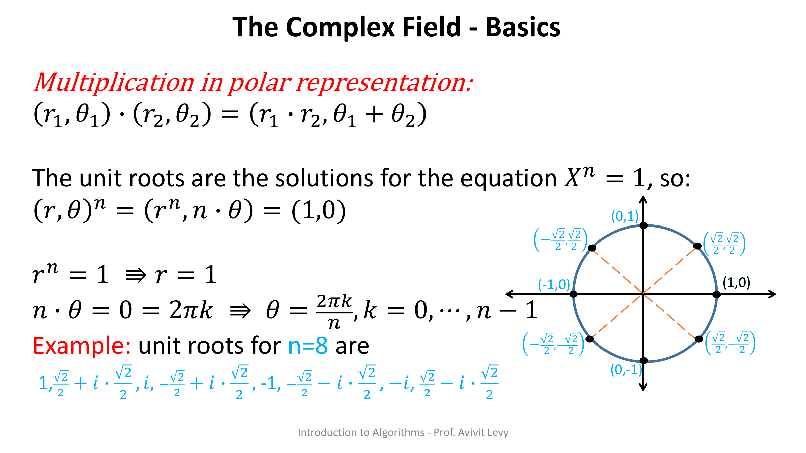
2.2 שורש יחידה פרימיטיבי
- n=2: 1 אינו פרימיטיבי, אבל −1 כן (כי (−1)⁰=1 ≠ (−1)¹=−1).
- n=4: −1 אינו פרימיטיבי (כי (−1)⁰=1=(−1)²), אבל i כן: i⁰=1, i¹=i, i²=−1, i³=−i — כולם שונים.
התכונה המכרעת: בעזרת החזקות של שורש פרימיטיבי מסדר n מקבלים את כל n שורשי היחידה. זו הסיבה שנבחר להעריך את הפולינום דווקא בשורשי היחידה — לחזקות שלהם יש מבנה רקורסיבי שה-FFT ינצל.
2.3 ארבע התכונות (Properties) של שורשי יחידה
ארבע התכונות שהמרצה מוכיחה הן בדיוק מה שגורם ל-FFT לעבוד:
| # | הטענה | הרעיון בהוכחה |
|---|---|---|
| 1 | אם ω שורש יחידה מסדר n, אז ωʲ שורש יחידה מסדר n לכל j∈ℕ. | (ωʲ)ⁿ = (ωⁿ)ʲ = 1ʲ = 1. |
| 2 | אם ω פרימיטיבי מסדר n ו-c∈ℤ, c≠0 כך ש-n אינו מחלק את c, אז Σk=0n−1 ωck = 0. | טור הנדסי: (ωcn−1)/(ωc−1) = (1−1)/(ωc−1) = 0 (המונה מתאפס כי ωⁿ=1, המכנה ≠0 כי ω פרימיטיבי). |
| 3 | אם ω פרימיטיבי מסדר n זוגי, אז ω² פרימיטיבי מסדר n/2. | (ω²)n/2 = ωⁿ = 1, וכל (ω²)⁰,…,(ω²)n/2−1 שונים כי הם תת-קבוצה של החזקות השונות של ω. זו התכונה שמצדיקה את הרקורסיה! |
| 4 | אם ω פרימיטיבי מסדר n זוגי, אז ωn/2 = −1. | (ωn/2)² = 1 ⟹ ωn/2 שורש מסדר 2 (±1), ולא 1 כי ω פרימיטיבי ⟹ הוא −1. מכאן שהחצי השני של הנקודות הם ההופכיים של הראשון. |
מקור: fft.pdf (עמ' 11–30)
3. התמרת פורייה ומטריצת פורייה
ה-התמרת פורייה Fn: ℂⁿ → ℂⁿ ממפה את הפולינום מייצוג מקדמים לייצוג נקודות. בהינתן וקטור המקדמים P באורך n, ההתמרה היא תוצאת הכפל של מטריצת פורייה מסדר n בוקטור P, והתוצאה היא הערכים P(ω⁰), P(ω¹), …, P(ωⁿ⁻¹).
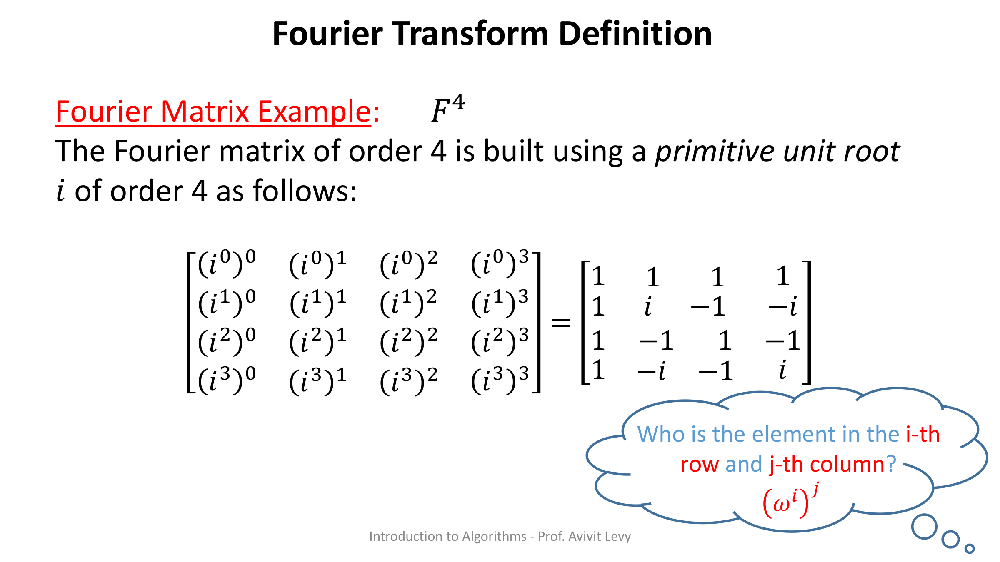
[ i^(0·0) i^(0·1) i^(0·2) i^(0·3) ] [ 1 1 1 1 ]
F₄ = [ i^(1·0) i^(1·1) i^(1·2) i^(1·3) ] = [ 1 i −1 −i ]
[ i^(2·0) i^(2·1) i^(2·2) i^(2·3) ] [ 1 −1 1 −1 ]
[ i^(3·0) i^(3·1) i^(3·2) i^(3·3) ] [ 1 −i −1 i ]
כדי לראות את ההתמרה בפעולה, ניקח את P = (1, −2, 1, 3) = 1 − 2X + X² + 3X³ ונכפול ב-F₄:
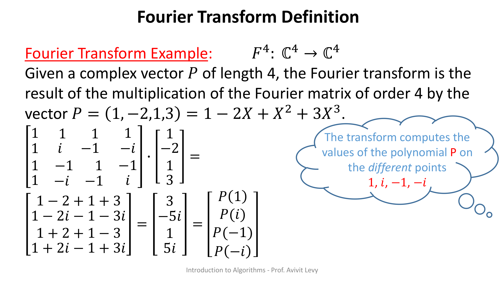
[ 1 1 1 1 ] [ 1 ] [ 1−2+1+3 ] [ 3 ] [ P(1) ] [ 1 i −1 −i ] · [ −2 ] = [ 1−2i−1−3i ] = [ −5i ] = [ P(i) ] [ 1 −1 1 −1 ] [ 1 ] [ 1+2+1−3 ] [ 1 ] [ P(−1) ] [ 1 −i −1 i ] [ 3 ] [ 1+2i−1+3i ] [ 5i ] [ P(−i) ]
מקור: fft.pdf (עמ' 10, 31–35)
4. FFT — הפרד ומשול (Divide & Conquer)
נניח ש-n חזקה של 2. הרעיון: מפצלים את הפולינום למקדמים במקומות הזוגיים ובמקומות האי-זוגיים:
P_even(X) = p₀ + p₂·X¹ + p₄·X² + ⋯ + p_{n−2}·X^{n/2−1}
P_odd(X) = p₁ + p₃·X¹ + p₅·X² + ⋯ + p_{n−1}·X^{n/2−1}
ואז מרכיבים בחזרה ע"י הזהות (Conquer):
P(X) = P_even(X²) + X·P_odd(X²) P(−X) = P_even(X²) − X·P_odd(X²)
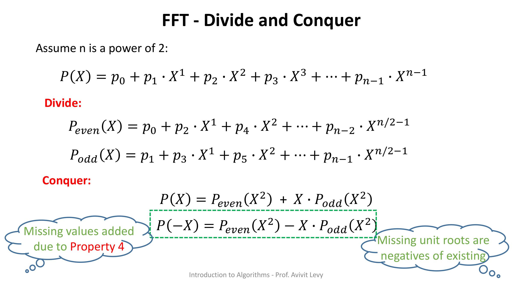
4.1 הפסאודו-קוד — Recursive-FFT
הפסאודו-קוד מילה במילה מהשקף (מספור השורות המקורי), עם ההערות "הפרד" (divide, שורות 6–7) ו-"ומשול" (conquer, שורות 10–13):
Recursive-FFT(a)
1. n ← length[a]
2. if n = 1
3. then return a
4. ωₙ ← e^{2πi/n}
5. ω ← 1
6. a^{[0]} ← (a₀, a₂, …, a_{n-2})
7. a^{[1]} ← (a₁, a₃, …, a_{n-1})
8. y^{[0]} ← Recursive-FFT(a^{[0]})
9. y^{[1]} ← Recursive-FFT(a^{[1]})
10. for k ← 0 to n/2 - 1
11. do y_k ← y_k^{[0]} + ω·y_k^{[1]}
12. y_{k+(n/2)} ← y_k^{[0]} − ω·y_k^{[1]}
13. ω ← ω·ωₙ
14. return y
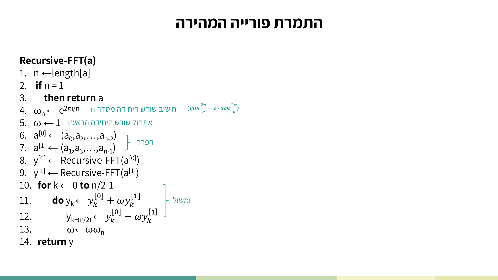
4.2 הסבר שורה-שורה
- שורה 1: n מקבל את אורך וקטור המקדמים.
- שורות 2–3 (מקרה בסיס): אם n=1, זהו פולינום קבוע — ערכו בכל נקודה הוא המקדם עצמו, ולכן מחזירים את a.
- שורה 4: ωₙ ← e^{2πi/n} = cos(2π/n) + i·sin(2π/n) — שורש יחידה פרימיטיבי מסדר n. למשל n=2 → −1, n=4 → i.
- שורה 5: אתחול ω = 1 (= ωₙ⁰), השורש הראשון.
- שורות 6–7 (הפרד): פיצול למקדמים במקומות הזוגיים (a^{[0]}) ובמקומות האי-זוגיים (a^{[1]}).
- שורות 8–9: שתי קריאות רקורסיביות — מחשבות את הערכים של P_even, P_odd בנקודות (ωₙ²)ⁱ. עובד בזכות Property 3 (ωₙ² פרימיטיבי מסדר n/2).
- שורות 10–13 (ומשול / butterfly): לכל k, y_k = y_k^{[0]} + ω·y_k^{[1]} = P(ωₙk) ו- y_{k+n/2} = y_k^{[0]} − ω·y_k^{[1]} = P(−ωₙk) (בזכות Property 4), ואז מקדמים ω ← ω·ωₙ.
- שורה 14: החזרת וקטור הערכים y = (P(ω⁰),…,P(ωⁿ⁻¹)).
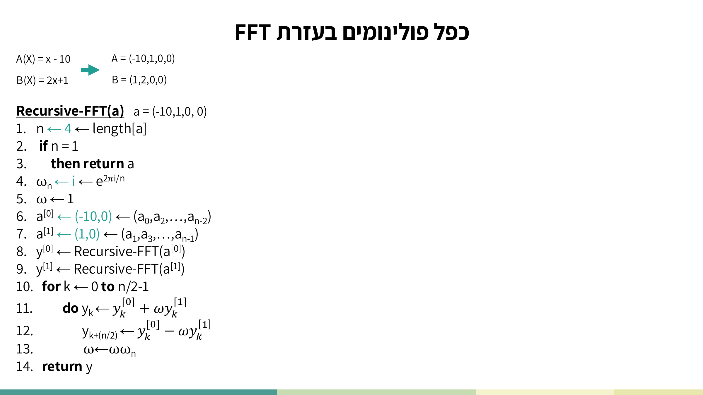
מקור: fft.pdf (עמ' 36–44), lec-polynomial-mult-fft.pdf (עמ' 4–5, 8)
5. מעקב ריצה מלא — שתי דוגמאות מההרצאה
5.1 FFT(0,1,2,3) — הדוגמה ממצגת ה-fft
הקלט (0,1,2,3) מייצג את P(X) = 0 + 1·X + 2·X² + 3·X³. עוקבים אחר הרקורסיה מלמטה למעלה:
FFT(0,1,2,3): n←4, ωₙ←i, a^{[0]}←(0,2), a^{[1]}←(1,3)
├─ FFT(0,2): n←2, ωₙ←−1, a^{[0]}←(0), a^{[1]}←(2)
│ ├─ FFT(0) = (0) // n=1, מקרה בסיס
│ └─ FFT(2) = (2) // n=1, מקרה בסיס
│ k=0: y₀ = 0 + 1·2 = 2 ; y₁ = 0 − 1·2 = −2 ⟹ return (2, −2)
└─ FFT(1,3): n←2, ωₙ←−1, a^{[0]}←(1), a^{[1]}←(3)
├─ FFT(1) = (1) // n=1
└─ FFT(3) = (3) // n=1
k=0: y₀ = 1 + 1·3 = 4 ; y₁ = 1 − 1·3 = −2 ⟹ return (4, −2)
שילוב סופי (ωₙ=i, ω מתחיל ב-1), y^{[0]}=(2,−2), y^{[1]}=(4,−2):
k=0: y₀ = 2 + 1·4 = 6 ; y₂ = 2 − 1·4 = −2 ; ω ← i
k=1: y₁ = −2 + i·(−2) = −2−2i ; y₃ = −2 − i·(−2) = −2+2i ; ω ← −1
⟹ return y = (6, −2−2i, −2, −2+2i)
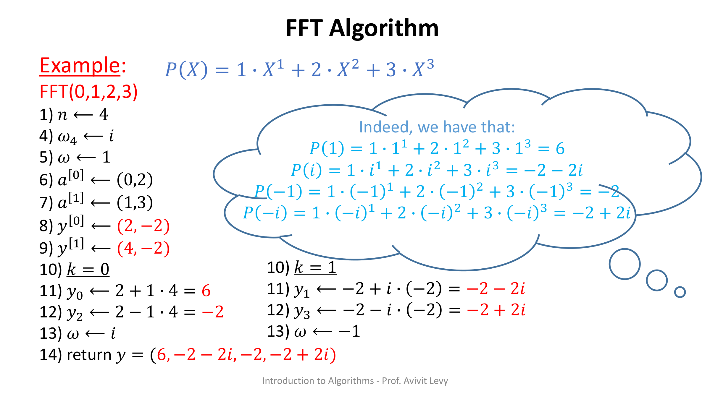
אימות — מציבים את שורשי היחידה מסדר 4 (1, i, −1, −i) ב-P(X)=X+2X²+3X³:
P(1) = 1 + 2 + 3 = 6 P(i) = i + 2·i² + 3·i³ = i − 2 − 3i = −2−2i P(−1) = −1 + 2 − 3 = −2 P(−i) = −i + 2·(−i)² + 3·(−i)³ = −i − 2 + 3i = −2+2i
5.2 FFT(A) עבור A(x)=x−10 — הדוגמה ממצגת ה-lec
המצגת השנייה עוקבת אחר A(x) = x − 10, כלומר וקטור המקדמים A = (−10, 1, 0, 0) (מרופד ב-אפסים ל-4 מקומות = 2n, כדי לאפשר כפל בפולינום נוסף מדרגה זהה). שלב השילוב הראשי:
קריאה ראשית A=(−10,1,0,0): n←4, ωₙ←i, a^{[0]}←(−10,0), a^{[1]}←(1,0)
⟹ FFT(−10,0) = (−10, −10) // y₀=−10+1·0, y₁=−10−1·0
⟹ FFT(1,0) = (1, 1) // y₀=1+1·0, y₁=1−1·0
שילוב: y^{[0]}=(−10,−10), y^{[1]}=(1,1), ωₙ=i
k=0: y₀ = −10 + 1·1 = −9 ; y₂ = −10 − 1·1 = −11 ; ω ← i
k=1: y₁ = −10 + i·1 = −10+i ; y₃ = −10 − i·1 = −10−i ; ω ← −1
⟹ FFT(A) = (−9, −10+i, −11, −10−i)
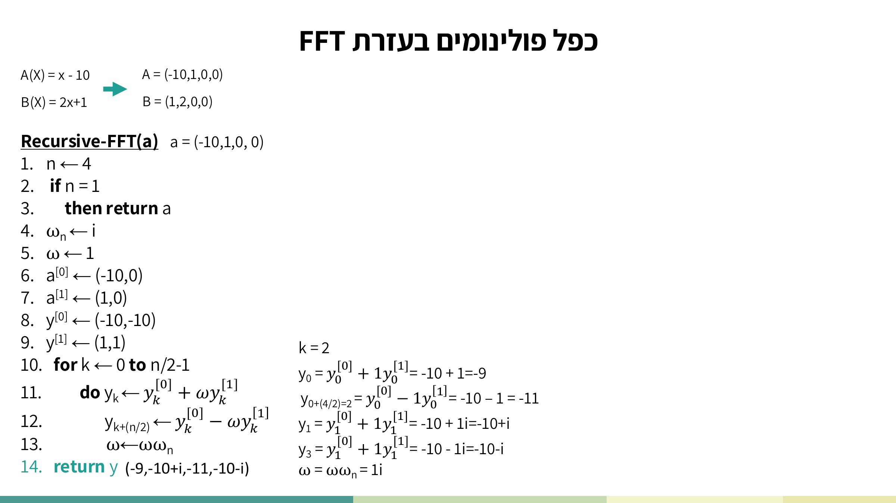
מקור: fft.pdf (עמ' 45–59), lec-polynomial-mult-fft.pdf (עמ' 7–26)
6. עלות ה-FFT — Θ(n log n)
מסכמים את עלות כל פקודה בפסאודו-קוד:
| מספר פקודה | עלות |
|---|---|
| 1 | Θ(n) |
| 2–5 | Θ(1) |
| 6–7 | Θ(n) |
| 8–9 | 2T(n/2) |
| 10–13 | Θ(n) |
| סה"כ | Θ(n log n) |
נוסחת הנסיגה היא אפוא T(n) = 2T(n/2) + c·n, ופותרים אותה ע"י גלגול:
T(n) = 2T(n/2) + c·n
= 2²T(n/2²) + 2c·n = ⋯ = 2^i·T(n/2^i) + i·c·n
הרקורסיה עוצרת כאשר n/2^i = 1 ⇔ i = log n :
T(n) = 2^{log n}·T(1) + (log n)·c·n = n·T(1) + c·n·log n = Θ(n log n)
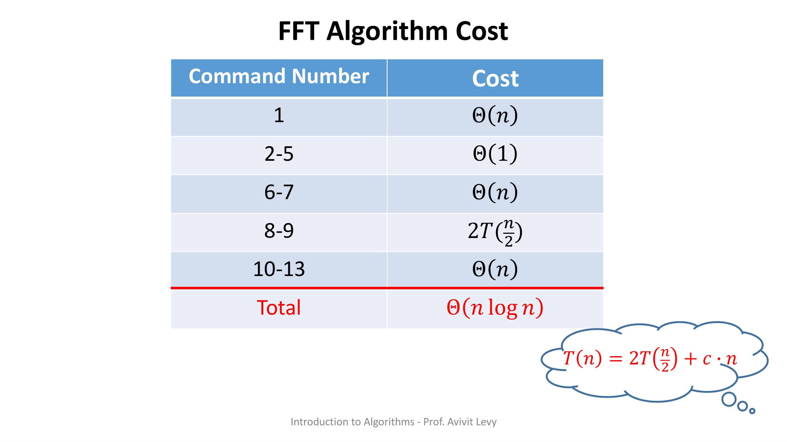
מקור: fft.pdf (עמ' 60–61)
7. FFT הפוך (Inverse FFT)
לאחר הכפל הנקודתי יש לנו את פולינום המכפלה בייצוג נקודות, וצריך לחזור לייצוג מקדמים — זהו ה-FFT ההופכי. נניח V_R וקטור הנקודות של המכפלה R באורך N=2n. אנחנו יודעים F_N · R = V_R (R לא ידוע, V_R ידוע), ולכן R = F_N⁻¹ · V_R. נותרות שלוש שאלות: האם F_N הפיכה? איך נראית F_N⁻¹? ואיך לחשב את הכפל ביעילות?
ההוכחה מראה ש-F_N⁻¹·F_N = I ישירות מ-Property 2:
(F_N⁻¹·F_N)[i,j] = Σ_{k=0}^{N−1} (1/N)·ω^(−ik)·ω^(kj)
= (1/N)·Σ_{k=0}^{N−1} (ω^(j−i))^k
= { 1, if j=i ; 0, if j≠i } ← לפי Property 2
7.1 הקשר בין F_N⁻¹ ל-F_N
מפשטים את ω−ij:
N·F_N⁻¹[i,j] = ω^(−ij) = (ω^N)^j / ω^(ij) = ω^((N−i)j) = F_N[N−i, j]
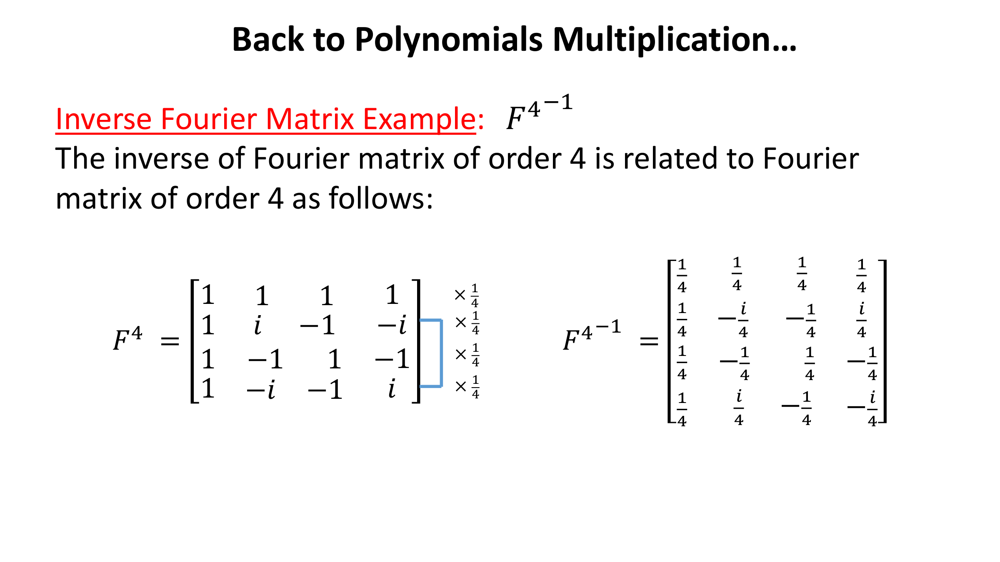
[ 1 1 1 1 ] [ 1 1 1 1 ]
F₄ = [ 1 i −1 −i ] F₄⁻¹ = (1/4)·[ 1 −i −1 i ]
[ 1 −1 1 −1 ] [ 1 −1 1 −1 ]
[ 1 −i −1 i ] [ 1 i −1 −i ]
7.2 חישוב יעיל של F_N⁻¹·V_R ב-3 שלבים
- חשב F_N · V_R באמצעות FFT רגיל — Θ(N log N).
- בווקטור התוצאה, החלף שורות i ↔ N−i עבור i=1,…,N/2−1 — Θ(N).
- כפול כל ערך ב-1/N — Θ(N).
סה"כ Θ(N log N) — אין צורך באלגוריתם נפרד; ה-IFFT הוא FFT + swap + חלוקה.
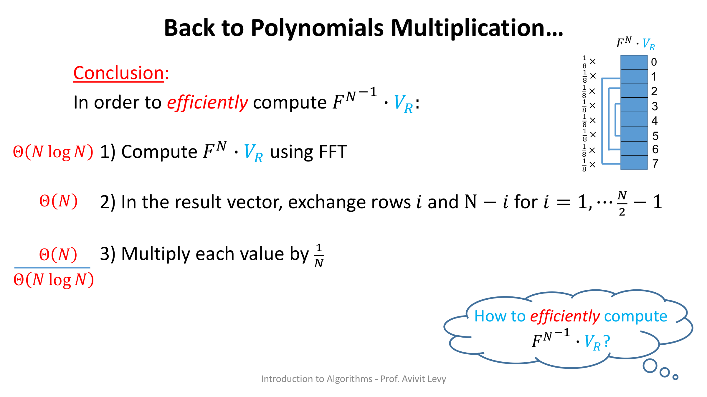
7.3 הפסאודו-קוד — Recursive-FFT⁻¹
הפסאודו-קוד מילה במילה מהשקף (כולל האיות המקורי devide_vector_by-scalar):
Recursive-FFT⁻¹(a) 1. n ← length[a] 2. c ← Recursive-FFT(a) 3. y ← devide_vector_by-scalar(n) 4. for i ← 1 to n/2-1 5. do swap(y[i], y[n-i]) 6. return y
- שורה 2: מפעילים שוב את אותו Recursive-FFT הרגיל — התובנה המרכזית של הקורס: אין צורך באלגוריתם נפרד.
- שורה 3: מחלקים כל רכיב ב-n.
- שורות 4–5: לולאת ההיפוך — swap(y[i], y[n−i]) (משקפים את הווקטור סביב אינדקס 0, פרט ל-y[0]).
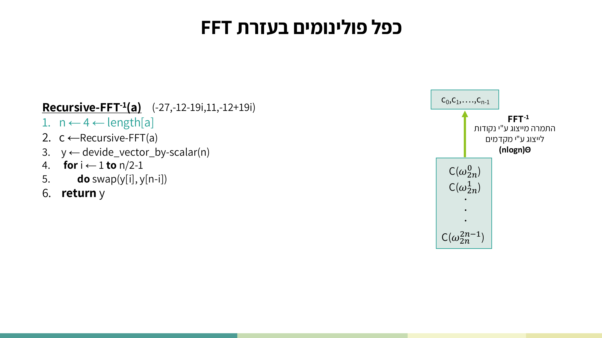
מקור: fft.pdf (עמ' 62–78), lec-polynomial-mult-fft.pdf (עמ' 29–35)
8. צינור הכפל המלא ב-O(n log n)
מחברים הכל לסכימת הכפל המהיר (Fast Polynomial Multiplication) — קלט: פולינומים P, Q מדרגה n:
- הערכה: מעריכים את P, Q ב-2n שורשי יחידה מסדר 2n ע"י FFT(P'), FFT(Q'), כאשר P', Q' הם וקטורי המקדמים לאחר zero-padding ב-n אפסים (המכפלה ממעלה 2n−2 ולכן דרושות 2n נקודות) — Θ(n log n).
- כפל נקודתי: R(ωⁱ) = P'(ωⁱ)·Q'(ωⁱ) לכל 0 ≤ i ≤ 2n−1 — כפל נקודה-נקודה, Θ(n).
- אינטרפולציה: מחשבים את ייצוג המקדמים של R ע"י FFT⁻¹ — Θ(n log n).
8.1 הדוגמה המלאה: A(x)=x−10 · B(x)=2x+1
ממשיכים את המעקב מסעיף 5.2. שני הפולינומים מרופדים ל-4 מקומות:
FFT(A) = (−9, −10+i, −11, −10−i) // A(x)=x−10 FFT(B) = ( 3, 1+2i, −1, 1−2i) // B(x)=2x+1 כפל נקודתי C(ωⁱ) = A(ωⁱ)·B(ωⁱ): (−9)(3) = −27 (−10+i)(1+2i) = −12−19i (−11)(−1) = 11 (−10−i)(1−2i) = −12+19i ⟹ C = (−27, −12−19i, 11, −12+19i) FFT⁻¹(C): c ← Recursive-FFT(C) = (−40, 0, 8, −76) y ← c / 4 = (−10, 0, 2, −19) swap(y[1], y[3]) = (−10, −19, 2, 0) ⟹ מכפלה בייצוג מקדמים = (−10, −19, 2, 0) = 2x² − 19x − 10
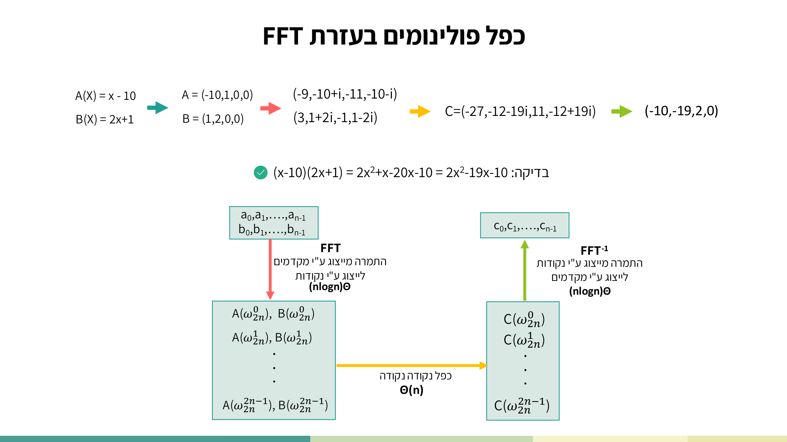
מקור: fft.pdf (עמ' 62–65), lec-polynomial-mult-fft.pdf (עמ' 27–37)
9. תרגילי הקורס
מצגת ה-lec כוללת שני תרגילי כיתה מלאים עם פתרון רשמי, ואחריהם דף תרגיל הבית (hw-fft.pdf), שגם לו קיים פתרון רשמי של המרצה (sol-hw-fft.pdf). כולם מובאים כאן מילה במילה.
9.1 תרגיל 1 — סכום קרטזי של שתי קבוצות (Cartesian sum)
שאלה (מילה במילה מהמקור):
נתונות שתי קבוצות A ו-B, שכל אחת מהן מכילה n שלמים, בתחום 0 עד 10n (לא כולל).
ברצוננו לחשב את הסכום הקרטזי של A ו-B המוגדר ע"י: C = {x + y | ∀x ∈ A, ∀y ∈ B}
שימו לב – השלמים ב-C הם בתחום בין 0 ל-20n-1 (לא כולל).
כתבו אלגוריתם יעיל המוצא את איברי C ואת מספר הפעמים שכל איבר ב-C מתקבל כסכום איברים מ-A ומ-B.
דוגמה (עבור n=2): A={4,10}, B={3,9} ⟹ C={7, 13(2), 19} — כלומר 7=4+3, 13=4+9=10+3 (פעמיים), 19=10+9.
פתרון (מילה במילה מהמקור):
נזכר בחוק החזקות: a^x · a^y = a^{x+y}.
נתייחס למספרים בקבוצות A ו-B בתור המעריכים של הפולינומים. בגלל שנרצה להתייחס רק למעריכים שהם איברים בקבוצות, נגדיר את המקדמים של הפולינומים כך:
a_i = { 1 : i ∈ A ; 0 : i ∉ A } b_j = { 1 : j ∈ B ; 0 : j ∉ B }
המעריכים של פולינום המכפלה C(x) = A(x)·B(x) יהיו בדיוק הסכום הקרטזי של איברים מ-A ומ-B. המקדם של האיבר בעל המעריך ה-K יהיה מספר הפעמים ש-k מתקבל בסכום הקרטזי של A ו-B.
פסאודו-קוד הפתרון (מילה במילה מהמקור):
find_cartesian_sum(A,B) 1. A_polinom ← convert_to_polinom(A) 2. B_polinom ← convert_to_polinom(B) 3. C ← multiply_polinoms_FFT(A_polinom, B_polinom) 4. return C עלות: O(n log n) convert_to_polinom(A) 1. polinom ← fill_with_zero(length[A]) 2. for a ∈ A 3. do polinom[a] ← 1 4. return polinom עלות: O(n)
הסבר מודרך: ה-trick הוא לקודד את הקבוצות כפולינומי אינדיקטור — מציבים 1 במקום (המעריך) של כל איבר. כשכופלים שני פולינומים, המקדם של x^k בתוצאה סופר בכמה דרכים k = i+j עם a_i=1, b_j=1 — בדיוק מספר הפעמים ש-k מתקבל כסכום קרטזי. הכפל עצמו נעשה ב-רדוקציה ל-multiply_polinoms_FFT שלמדנו, ולכן העלות הכוללת O(n log n). זהו trick נפוץ בשאלות מבחן.
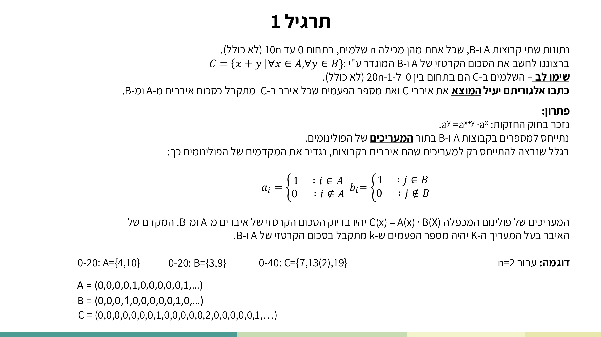
מקור: lec-polynomial-mult-fft.pdf (עמ' 37–44)
9.2 תרגיל 2 — מטריצות טופליץ (Toeplitz matrices)
הגדרה (מילה במילה מהמקור): מטריצת טופליץ היא מטריצה בגודל n×n המקיימת a_ij = a_{i-1,j-1} (כל אלכסון קבוע). לדוגמה:
( 5 3 2 1 ) באופן כללי: ( a_{n-1} … a_0 )
( 7 5 3 2 ) ( ⋮ ⋱ ⋮ )
( 8 7 5 3 ) ( a_{2n-2} … a_{n-1} )
( 0 8 7 5 )
השאלות (מילה במילה מהמקור):
א. האם סכום שתי מטריצות טופליץ היא מטריצת טופליץ?
ב. האם מכפלה של שתי מטריצות טופליץ היא מטריצת טופליץ?
ג. תארו ייצוג של מטריצת טופליץ המאפשר חיבור של שתי מטריצות טופליץ בזמן O(n)
ד. הציעו אלגוריתם הכופל מטריצת טופליץ בוקטור באורך n בזמן O(n log n)
ה. הציעו אלגוריתם יעיל לכפול שתי מטריצות טופליץ.
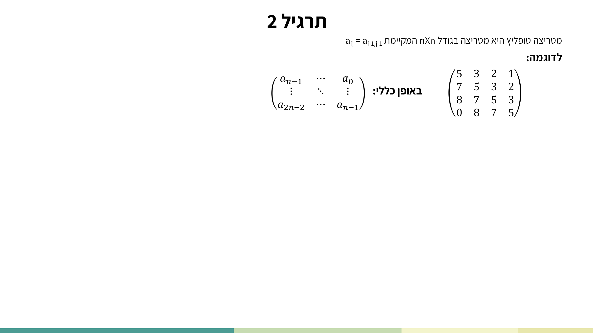
סעיף א' — כן (מילה במילה מהמקור):
בהינתן 2 מטריצות טופליץ A ו-B מתקיים לכל i≠1, j≠1: [A+B]_{i,j} = a_{i,j} + b_{i,j} = a_{i-1,j-1} + b_{i-1,j-1} = [A+B]_{i-1,j-1}
סעיף ב' — לא (מילה במילה מהמקור): דוגמה נגדית:
( 2 3 ) · ( 5 6 ) = ( 22 27 ) ( 1 2 ) ( 4 5 ) ( 13 16 )
התוצאה אינה מטריצת טופליץ (האלכסון הראשי 22 ≠ 16 אינו קבוע).
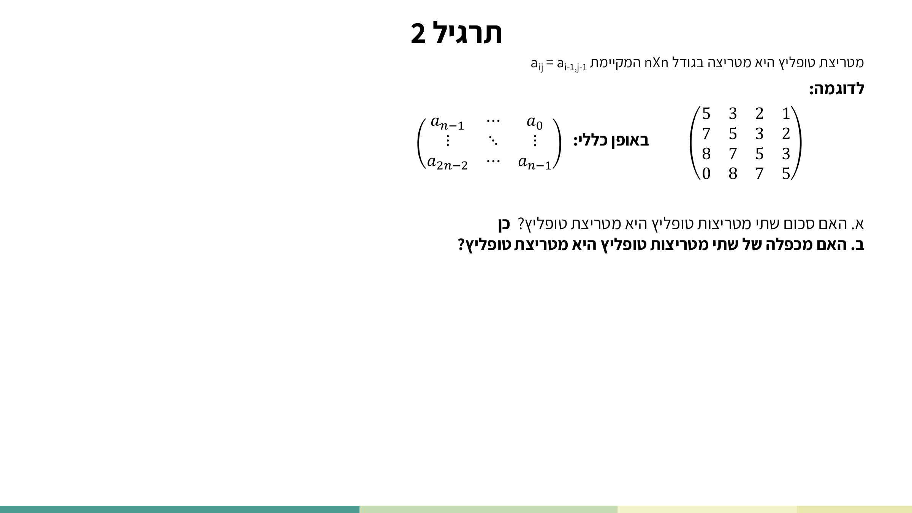
סעיף ג' — ייצוג בווקטור אלכסונים באורך 2n-1 (מילה במילה מהמקור):
נייצג מטריצת טופליץ ע"י וקטור באורך 2n-1. כאשר האיבר ה-i בוקטור ייצג את האיברים על האלכסון ה-i במטריצה, כאשר מתחילים לספור מהפינה הימנית העליונה.
a = [a_0, a_1, … a_{n-1}, … a_{2n-2}]
חיבור שתי מטריצות טופליץ בייצוג זה הוא פשוט חיבור הוקטורים המייצגים של המטריצות. [ולכן זמן O(n)]
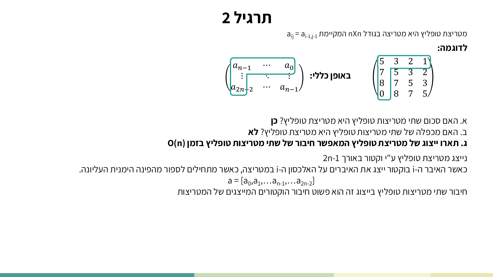
סעיף ד' — כפל טופליץ בוקטור ב-O(n log n) (מילה במילה מהמקור):
נסתכל על הוקטור שמייצג את מטריצת טופליץ מסעיף ג — a = [a_0,a_1,…a_{n-1},…a_{2n-2}]. נתייחס לוקטור זה כאל וקטור מקדמי פולינום ונכפול אותו בוקטור B בעזרת FFT כפי שלמדנו. לצורך השימוש באלגוריתם שלמדנו נצטרך לבצע את הרדוקציה הבאה:
1. נשים לב שהוקטור שמייצג את מטריצת טופליץ הוא בעל דרגה אי-זוגית. נרפד את הוקטור עם אפס אחד בסופו.
2. הוקטור שמייצג את מטריצת טופליץ באורך 2n (הוספנו אפס בסוף הוקטור), נרפד את וקטור B ב-n אפסים בסוף הוקטור.
כעת, כשהקלט שלנו תואם לקלט של אלגוריתם מכפלת הפולינומים באמצעות FFT שלמדנו, נוכל להשתמש בו ולהחזיר רק את 2n-2 התאים הראשונים בתוצאה.
סעיף ה' — כפל שתי מטריצות טופליץ (מילה במילה מהמקור):
אי אפשר להשתמש בייצוג של שתי המטריצות לפי וקטורים ולכפול אותם כי מטריצת המכפלה אינה מטריצת טופליץ ולכן אין לה ייצוג מקוצר. נחלק את מטריצה B ל-n וקטורים באורך n כך שכל עמודה במטריצה B תהיה וקטור. נכפיל את מטריצה A ב-n הוקטורים של מטריצה B ונבנה מוקטורי התשובה את מטריצת התוצאה C.
דוגמת ריצה: כופלים A=(5,3,2,1/7,5,3,2/8,7,5,3/0,8,7,5) בכל עמודה של B=(1,2,3,4/5,1,2,3/6,5,1,2/7,6,5,1) (כל עמודה = כפל טופליץ-בוקטור ב-O(n log n)):
39 29 28 34
C = 64 46 44 51
94 66 58 66
117 73 48 43
עלות: O(n² log n) — n עמודות, כל אחת ב-O(n log n).
הסבר מודרך: הרעיון הכולל — כל השאלה היא סדרת רדוקציות אל האלגוריתם שכבר יש לנו. ייצוג האלכסונים (סעיף ג) הופך מטריצת טופליץ לוקטור, כפל טופליץ-בוקטור (ד) הופך לכפל פולינומים ב-FFT, וכפל שתי מטריצות (ה) מתפרק ל-n כפלים כאלה. שימו לב שאי אפשר "לקצר" בסעיף ה' כי המכפלה כבר אינה טופליץ (זו בדיוק המסקנה מסעיף ב').
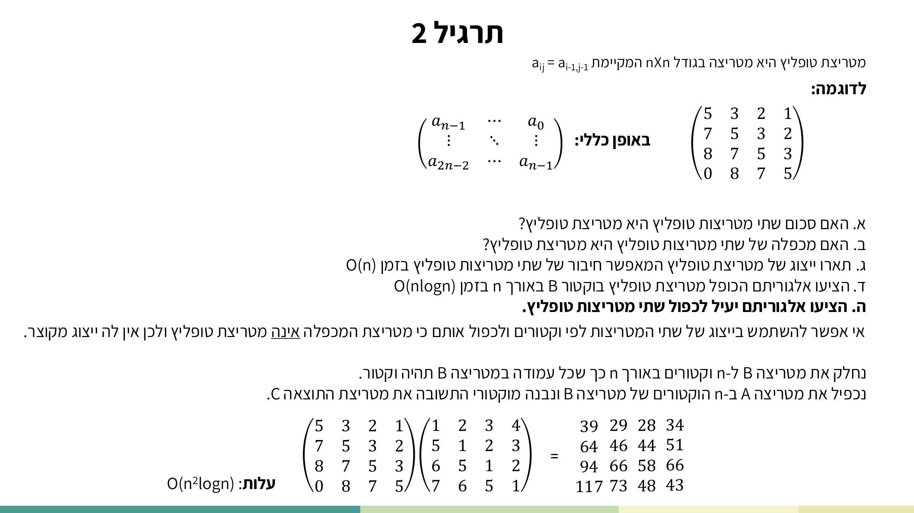
מקור: lec-polynomial-mult-fft.pdf (עמ' 45–61)
9.3 תרגיל בית — FFT ומכפלת פולינומים
דף תרגיל הבית (כותרת: "תרגיל בית - FFT ומכפלת פולינומים"). קיים לו פתרון רשמי מלא של המרצה (sol-hw-fft.pdf, 6 עמודים). להלן דף התרגיל המקורי, ומתחתיו — בתוך "הצג פתרון" — סריקות הפתרון הרשמי והתעתיק המלא שלו מילה במילה, ואחריו הסבר מודרך משלנו.

1) כתבו את השורה ה-6 והשורה ה-7 במטריצת פורייה מסדר 8.
2) מהי תוצאת אלגוריתם ה- FFT עבור הפולינום המיוצג על ידי וקטור המקדמים (4,3,2,1) ?
3) עבור איזה פולינום תוחזר התוצאה (4,3,2,1) מאלגוריתם ה- FFT ?
4) ברצוננו להכפיל את הפולינומים הבאים תוך שימוש ב- FFT: A(x) = 2x − 1, B(x) = −4x + 3. הראו את ההתמרה לייצוג על ידי נקודות, הכפילו את התוצאות נקודה נקודה, ולבסוף חשבו את ה- FFT ההופכי לקבלת תוצאת הכפל בייצוג מקדמים.
⬇️ הורדת דף תרגיל הבית (hw-fft.pdf) · ⬇️ הורדת הפתרון הרשמי (sol-hw-fft.pdf)
הפתרון הרשמי של המרצה (מילה במילה מהסריקות):

שאלה 1 — השורה ה-6 וה-7 במטריצת פורייה מסדר 8. שורש היחידה הפרימיטיבי:
ω = (1, 2π/8) = √2/2 + √2/2·i שורה 6: ω⁵ = (1, 2π·5/8) = −√2/2 − √2/2·i (ω⁵)⁰, (ω⁵)¹, (ω⁵)², (ω⁵)³, (ω⁵)⁴, (ω⁵)⁵, (ω⁵)⁶, (ω⁵)⁷ = 1, −√2/2 − √2/2 i, i, +√2/2 − √2/2 i, −1, √2/2 + √2/2 i, −i, −√2/2 + √2/2 i שורה 7: ω⁶ = (1, 2π·6/8) = −i (ω⁶)⁰, (ω⁶)¹, (ω⁶)², (ω⁶)³, (ω⁶)⁴, (ω⁶)⁵, (ω⁶)⁶, (ω⁶)⁷ = 1, −i, −1, i, 1, −i, −1, i

שאלה 2 — תוצאת ה-FFT עבור וקטור המקדמים (4,3,2,1). מריצים את האלגוריתם:
a = (4,3,2,1)
n = 4 , ωₙ = i , ω = 1
a^[0] = (4,2) a^[1] = (3,1)
נפעיל את האלגוריתם רקורסיבית על הפולינומים האלה:
FFT(4,2): n=2, ωₙ=−1, ω=1 FFT(3,1): n=2, ωₙ=−1, ω=1
a^[0]=(4) a^[1]=(2) a^[0]=(3) a^[1]=(1) (n=1 → החזרה)
y^[0]=(4) y^[1]=(2) y^[0]=(3) y^[1]=(1)
for k=0 to 0: for k=0 to 0:
y₀⁰ = 4 + 1·2 = 6 y₀⁰ = 3 + 1·1 = 4
y₁⁰ = 4 − 1·2 = 2 y₁⁰ = 3 − 1·1 = 2
⟹ y^[0] = (6,2) ⟹ y^[1] = (4,2)
נחזור לקריאה הרקורסיבית הראשונה:
n = 4 , ωₙ = i , ω = 1
for k = 0 to 1:
k = 0: y₀ = 6 + 4 = 10 ; y₂ = 6 − 4 = 2 ; ω ← i
k = 1: y₁ = 2 + 2i ; y₃ = 2 − 2i
תשובה סופית: y = (10, 2 + 2i, 2, 2 − 2i)

שאלה 3 — עבור איזה פולינום תוחזר התוצאה (4,3,2,1) מה-FFT? כדי לענות צריך לחשב את התמרת פורייה ההפוכה של הוקטור. מאחר ובשאלה 2 כבר חישבנו עבורו את התמרת פורייה, כל שנותר הוא לחלק ב-4 ולסדר מחדש את רכיבי הוקטור. לכן התשובה היא:
(10, 2 + 2i, 2, 2 − 2i) ⟹ (2½, ½ + ½i, ½, ½ − ½i) ⟹ (2½, ½ − ½i, ½, ½ + ½i)
שאלה 4 — כפל A(x) = 2x − 1 ו-B(x) = −4x + 3 באמצעות FFT. כדי להכפיל שני פולינומים מדרגה n צריך להעביר אותם לדרגה 2n וזאת בעזרת ריפוד באפסים. תחילה מריצים FFT על A:
A(x) = 2x − 1 = (−1, 2, 0, 0) FFT(−1, 2, 0, 0): n = 4 a^[0] = (−1,0) a^[1] = (2,0) n = 2 , ωₙ = −1 , ω = 1 a^[0]=(−1) a^[1]=(0) a^[0]=(2) a^[1]=(0) y^[0]=(−1) y^[1]=(0) y^[0]=(2) y^[1]=(0) for k=0 to 0: for k=0 to 0: y₀⁰ = −1 + 0 = −1 y₀⁰ = 2 y₁⁰ = −1 − 0 = −1 y₁⁰ = 2 ⟹ y^[0] = (−1,−1) ⟹ y^[1] = (2,2) נחזור לקריאה הרקורסיבית הראשונה: n = 4 , ωₙ = i , ω = 1 for k = 0 to 1: k = 0: y₀ = −1 + 2 = 1 ; y₂ = −1 − 2 = −3 ; ω ← i k = 1: y₁ = −1 + 2i ; y₃ = −1 − 2i קיבלנו: yₐ = (1, −1 + 2i, −3, −1 − 2i)

וכעת מריצים FFT על B:
B(x) = −4x + 3 = (3, −4, 0, 0) FFT(3, −4, 0, 0): n = 4 a^[0] = (3,0) a^[1] = (−4,0) n = 2 , ωₙ = −1 , ω = 1 a^[0]=(3) a^[1]=(0) a^[0]=(−4) a^[1]=(0) y^[0]=(3) y^[1]=(0) y^[0]=(−4) y^[1]=(0) for k=0 to 0: for k=0 to 0: y₀⁰ = 3 y₀⁰ = −4 y₁⁰ = 3 y₁⁰ = −4 ⟹ y^[0] = (3,3) ⟹ y^[1] = (−4,−4) נחזור לקריאה הרקורסיבית הראשונה: n = 4 , ωₙ = i , ω = 1 for k = 0 to 1: k = 0: y₀ = 3 − 4 = −1 ; y₂ = 3 + 4 = 7 ; ω ← i k = 1: y₁ = 3 − 4i ; y₃ = 3 + 4i קיבלנו: y_b = (−1, 3 − 4i, 7, 3 + 4i)

נכפיל את שני הוקטורים רכיב-רכיב:
yₐ = (1, −1 + 2i, −3, −1 − 2i) y_b = (−1, 3 − 4i, 7, 3 + 4i) חישובים: (3 − 4i)(−1 + 2i) = −3 + 6i + 4i + 8 = 5 + 10i (3 + 4i)(−1 − 2i) = −3 − 6i − 4i + 8 = 5 − 10i המכפלה: c = yₐ · y_b = (−1, 5 + 10i, −21, 5 − 10i)
כעת צריך להמיר את הפולינום שקיבלנו (4 נקודות) בחזרה לייצוג מקדמים, ולשם כך מפעילים את התמרת פורייה ההפוכה — מריצים FFT ואח"כ מחלקים ב-4 ומסדרים מחדש:
FFT(−1, 5 + 10i, −21, 5 − 10i): n = 4 a^[0] = (−1, −21) a^[1] = (5 + 10i, 5 − 10i) n = 2 , ωₙ = −1 , ω = 1 a^[0]=(−1) a^[1]=(−21) a^[0]=(5+10i) a^[1]=(5−10i) y^[0]=(−1) y^[1]=(−21) y^[0]=(5+10i) y^[1]=(5−10i) for k=0 to 0:

y₀⁰ = −1 − 21 = −22 y₀⁰ = 5 + 10i + 1·(5 − 10i) = 10 y₁⁰ = −1 + 21 = 20 y₁⁰ = 5 + 10i − 1·(5 − 10i) = 20i ⟹ y^[0] = (−22, 20) ⟹ y^[1] = (10, 20i) נחזור לקריאה הרקורסיבית הראשונה: n = 4 , ωₙ = i , ω = 1 for k = 0 to 1: k = 0: y₀ = −22 + 1·10 = −12 ; y₂ = −22 − 1·10 = −32 ; ω ← i k = 1: y₁ = 20 + i·20i = 0 ; y₃ = 20 − i·20i = 40 קיבלנו: y_b = (−12, 0, −32, 40) נחלק ב-n=4: y_b = (−3, 0, −8, 10) נשנה את הסדר (לכל 1 ≤ i ≤ n−1, לא כולל 0 — נחליף את תוצאה i בתוצאה n−i): y_b = (−3, 10, −8, 0) לסיכום: A(x) · B(x) = −3 + 10x − 8x²
בדיקה (מהפתרון הרשמי):
A(x) = 2x − 1 B(x) = −4x + 3 A(x) · B(x) = (2x − 1)(−4x + 3) = −8x² + 6x + 4x − 3 = −3 + 10x − 8x²
הסבר מודרך שלנו (לא חלק מהפתרון הרשמי):
מקור: hw-fft.pdf (עמ' 1), sol-hw-fft.pdf (עמ' 1–6)
10. בדיקה עצמית
מהי תוצאת FFT(0,1,2,3) (כלומר הפולינום P(X)=X+2X²+3X³ בשורשי היחידה מסדר 4)?
כדי לכפול שני פולינומים ממעלה n באמצעות FFT, בכמה שורשי יחידה מעריכים ומאיזה סדר?
איזה מהבאים הוא שורש יחידה פרימיטיבי מסדר 4?
כיצד מחשבים את ה-FFT ההופכי (IFFT) ביעילות, לפי הקורס?
בשלב השילוב (butterfly) של הקריאה הראשית FFT(−10,1,0,0) נתונים y^{[0]}=(−10,−10), y^{[1]}=(1,1) ו-ωₙ=i. מהו y₁ (עבור k=1, שבו ω=i)?